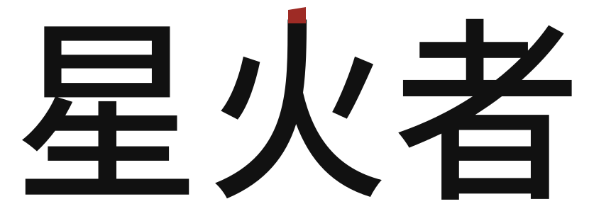
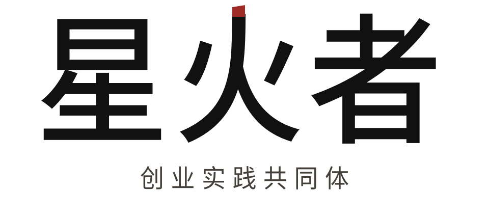
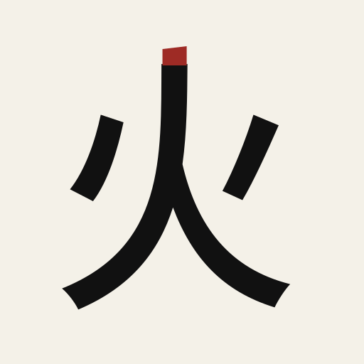

星火者｜当代骨力
不是画一团火，而是让“正在行动的人”成为第一识别。




从字标里长出来的印记
头像只保留定制“火”字与朱砂中轴。它是辅助识别，不替代完整的“星火者”名称。
成员实践档案 / 01
带着正在做的事来。
真实问题 · 行动复盘 · 有限连接
不以群消息和身份感证明价值。
8-10首期人数
90实践天数
1具体推进
WORDMARK / SMALL SIZE
BRAND PRINCIPLE
独立行动，
有边界地连接。
朱砂只出现一次，用于火字中轴；其余依靠字形、比例和留白建立力量。